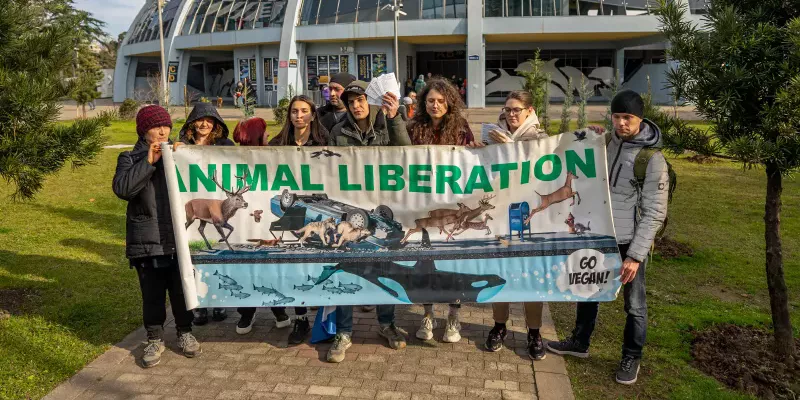

მომავლის საკვები
კამპანია მცენარეული საკვების უნივერსიტეტის კაფეტერიის მენიუებში დანერგვის შესახებ
შინაარსი

სოფლიოში 235 მილიონზე მეტი სტუდენტი ირიცხება უმაღლეს სასწავლებლებში და ამ დაწესებულებებში ათობით მილიონი პროფესორი და პერსონალი მუშაობს, შესაბამისად უნივერსიტეტები და კოლეჯები საკვების მნიშვნელოვანი მომწოდებლები არიან. უნივერსიტეტების უმეტესობას აქვს მდგრადობის გეგმა, რომელიც ასახავს სტრატეგიებსა და მიზნებს ნახშირბადის ემისიების შესამცირებლად.
თაობა (Gen) Z (დაბადებული 1997-2012 წლებში), რომელიც პლანეტაზე არსებული მოსახლეობის 25%-ს შეადგენს და მას ამ დროისთვის ყველაზე დიდ დემოგრაფიულ ჯგუფად აქცევს, ცნობილია, რომ ყველაზე მეტად არის ენთუზიაზმით განწყობილი მცენარეული საკვების მიმართ. მასაჩუსეტსის უნივერსიტეტის სტუდენტური სასადილოების გამოკითხვამ აჩვენა, რომ სტუდენტები ითხოვენ მენიუში უფრო მცენარეულ პროდუქტს, მათ შორის - მცენარეულ ბურგერებს, ძეხვს, პიცას და ა.შ. მცენარეული საუზმის ვარიანტები პოპულარულია როგორც ვეგანებში, ასევე ყველაფრისმჭამელებში.
პრობლემები

გაეროს სურსათისა და სოფლის მეურნეობის ორგანიზაციის შეფასებით, ყოველწლიურად 10 მილიონი ჰექტარი ტყე იჭრება. მეცხოველეობა იკავებს გლობალური სასოფლო-სამეურნეო მიწის თითქმის 80%-ს, მაგრამ აწარმოებს მსოფლიო კალორიების 20%-ზე ნაკლებს.
ამ მომენტისთვის ცხოველთა სოფლის მეურნეობა იყენებს:
- მსოფლიოს სასოფლო მეურნეობის მიწების 83%-ს;
- გვაძლევს მხოლოდ მთლიანად არსებული პროტეინის 37%-ს და კალორიების 18%-ს;
- პასუხისმგებელია 56-58% საკვებისაგან მომდინარე სხვადასხვა ემისიებში;
- ფერმის ცხოველთა მიერ გამოყოფილი გაზები შეადგენს ადამიანის მიზეზით გამოწვეული მეთანის ემისიების დაახლოებით 32%-ს;
- უმთავრესი დამნაშავეა ხე-ტყის გაჩეხვასა და ბიომრავალფეროვნების შემცირებაში (-69% 1970 წლიდან);
- უმთავრესი მიზეზია პანდემიების გამოწვევის, მათ შორის კორონავირუსი, ღორის გრიპი და ესპანური გრიპი;
- არის მიზეზი ყოველწლიურად 88 მილიარდი ცხოველის წამებისა და მკვლელობის...
ტენდენციები

- 2011 წელს, ჩრდილო ტეხასის უნივერსიტეტმა გახსნა პირველი სრულად ვეგანური სასადილო, რომელიც ემსახურება არამხოლოდ უნივერსიტეტს, არამედ - ადგილობრივ მაცხოვრებლებს.
- 2021 წელს, ბერლინის მთავრობამ ნახშირბადის კვალის შემცირების მიზნით წამოიწყო ახალი პროგრამა, რაც გულისხმობდა უნივერსიტეტის სასადილოების მენიუების ცვლილებას: 68% ვეგანური საკვების, 28% ვეგეტარიანული და მხოლოდ 4% ხორცეულის შემადგენლობით.
- დიდ ბრიტანეთში 2021 წელს წამოწყებული უნივერსიტეტების მცენარეული საკვების კამპანიის განცხადებით, მათი მიზანია 2025 წლისთვის სასადილოების მენიუ 100% მცენარეული გახდეს.
- 2002 წელს, ნიუ-იორკის ყველა სახელმწიფო სკოლაში დაიწყო “ვეგანური კვირეული”, რაც გულისხმობს ყოველ კვირა დღეს 930,000 სტუდენტს მცენარეულ საკვებს სთავაზობენ.
- იმავე წელს, კალიფორნიის მთავრობამ $700 მილიონის ინვესტირება მოახდინა სკოლების მცენარეულ საკვებში.
გადაჭრის გზები

2018 წელს, ოქსფორდის უნივერსიტეტში ჩატარებულმა საკვების წარმოების მსოფლიოს უდიდესმა ანალიზმა დაასკვნა, რომ რესურსების ინტენსიური მომხმარებელი და გარემოს დამაბინძურებელი ცხოველთა სოფლის მეურნეობის უარყოფა და მცენარეულ საკვებზე გადასვლა საუკეთესო საშუალებაა, ადამიანმა შეამციროს საკუთარი ნახშირბადის კვალი.
შემოთავაზებული პრობლემის გადაჭრის გზები:
- მენიუებში ხორცის და ცხოველური პროდუქტების მცენარეული ალტერნატივებით ჩანაცვლება;
- მენიუებში ახალი მცენარეული საკვების შემოტანა;
- ვეგანურ საკვებ ობიექტებთან, საწარმოებთან და მიტანის სერვისებთან თანამშრომლობით ალტერნატიული მცენარეული საკვები არჩევნის შეთავაზება დაინტერესებული სტუდენტებისათვის;
- სხვა დაწესებულებების წახალისება, განახორციელონ ცვლილებები, მედია საშუალებებისა და სოციალური მედიის მხარდაჭრის გზით.
მხარდაჭერა ჩვენი მხრიდან
-
სტუდენტების ინიციატივების მხარდაჭერა, მათ შორის - მცენარეული საკვების შეტანა უნივერსიტეტების მენიუებში;
-
ყველა იმ საჭირო ინფორმაციის და თეორიული მასალის მიწოდება, რომელიც ცვლილებების განსახორციელებლადაა საჭირო;
-
პროფესიონალი შეფ-მზარეულის დახმარებით უზრუნველყოფა, რომელიც მოხარული იქნება ადგილობრივი სასადილოების მზარეულებისთვის ჩაატაროს კულინარიული ვორქშოპები;
-
ღონისძიებების ორგანიზება, რომლებიც დაკავშირებულია უნივერსიტეტების მენიუებში მცენარეული საკვები ალტერნატივების შეტანაზე;
-
მედია-საშუალებებისა და სოციალური მედიის მხარდაჭერის უზრუნველყოფა ღონისძიებებისა და მენიუებში პოზიტიური ცვლილებების გაშუქების კუთხით.
მხარდაჭერა თქვენი მხრიდან
-
გაავრცელე ინფორმაცია მცენარეული საკვები ალტერნატივების შესახებ სტუდენტებსა და უნივერსიტეტში მომუშავე პირებს შორის;
-
შესთავაზე უნივერსიტეტის მზარეულებს, რომ სასადილოს მენიუში მცენარეული საკვები ალტერნატივები დაამატონ;
-
შეავსე სპეციალური ფორმა Vegangeorgia.org-ზე და შემოგვიერთდი მოხალისედ;
-
დაგვეხმარე აღმოვაჩინოთ მეტი თანამოაზრე სტუდენტებს შორის - დიდია ალბათობა, რომ გყავს მეგობრები/ნათესავები/თანამშრომლები, რომლებიც იცნობენ ჩევნი საერთო იდეის მატარებელ სტუდენტებს;
-
მიიღე მონაწილეობა “ვეგან ჯორჯიას” კამპანიასთან დაკავშირებულ ღონისძიებებში (კულინარიული ვორქშოპები, პრეზენტაციები და ა.შ.).
ალტერნატივები შენი უნივერსიტეტისათვის
ჩვენი შეფ-მზარეულები გვთავაზობენ ჯანსაღ, გემრიელ და ეკო-მეგობრულ საკვებს სასადილოებისთვის და საკვების შესასყიდი აპარატებისთვის. მენიუში არსებული შესაძლო ალტერნატივები:
-
სეიტანის ბურგერი (კარტოფილის პიურესთან და სალათთან ერთად);
-
ტოფუს სენდვიჩი და ტოფუს კაზეროლე;
-
სოიოს და სოკოს პილმენები
-
ფალაფელი (ბრინჯთან და ბადრიჯნის სალათთან ერთად);
-
სუპები (ოსპი, სტაფილო, ბარდა, მუხუდო, პამიდორი, გოგრა და სხვა);
-
ტკბილეული (ვაშლის ნამცხვარი, ბლინები ალუბლის ჯემით, დარიჩინის ხვეულები ლიმნის შიგთავსით და ა.შ.)

ვეგან ჯორჯიას შესახებ
“ვეგან ჯორჯია” დაარსდა 2015 წელს, რომელიც პირველი და დღესდღეობით ერთადერთი არასამთავრო ორგანიზაციაა საქართველოში, რომელიც მიზნად ისახავს ფერმის ცხოველებისა და სხვა ცხოველების უფლებათა დაცვას, განურჩევლად მათი სახეობისა.
ჩვენი მიზნებია:
- განათლება მცენარეული კვების ნუტრიციოლოგიისა და ცხოველთა ფუნდამენტური უფლებების შესახებ;
- საწარმოებისა და ქმედებების გამოაშკარავება;
- საკანონმდებლო ცვლილებზე მუშაობა და ცხოველთა უფლებების დაცვაზე ორიენტირებული ინიციატივების მხარდაჭერა;
- მცენარეული საკვები ობიექტების, ინიციატივებისა და ღონისძიებების მხარდაჭერა.